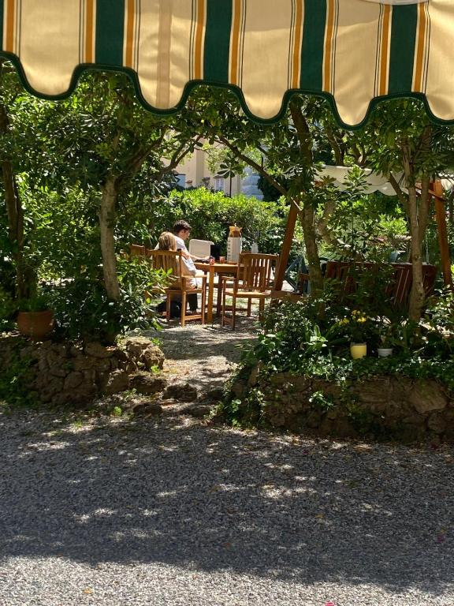
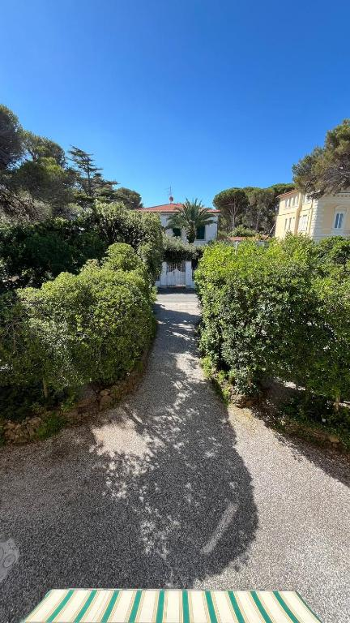
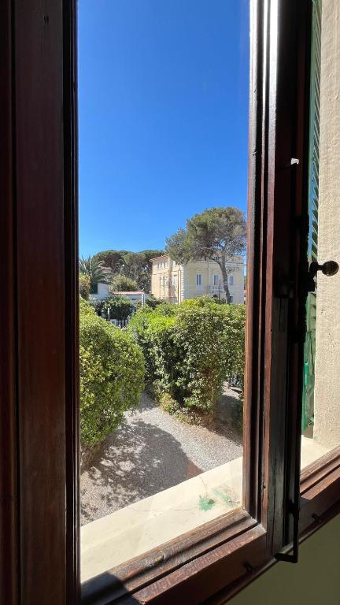
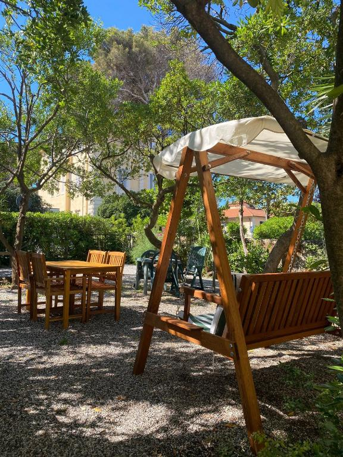
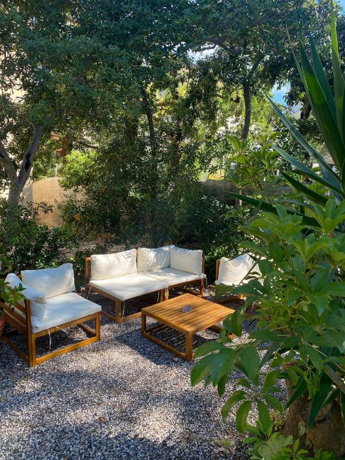
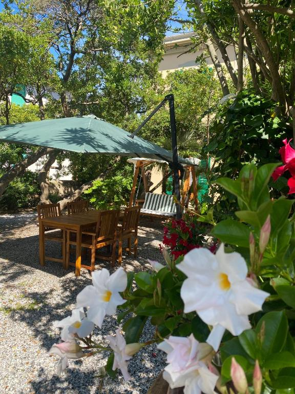

Uno sguardo
Il giardino, scorcio per scorcio





A due passi da Piazza della Vittoria, dove la natura cresce spontanea
Il giardino dell'Albergo Bartoli è un'autentica isola di tranquillità, a due passi da Piazza della Vittoria — cuore pulsante di Castiglioncello e punto d'incontro di VIP e giovani, estate dopo estate.
Ombreggiato da pitosfori giganti, il giardino accoglie gli ospiti in un rifugio silenzioso: dell'animata piazza, d'estate, arriva solo una piacevole eco di sottofondo, mentre qui si respira pace. Una delle nostre regole è lasciar crescere ciò che nasce spontaneamente.






"Una radura incantata e pacifica, in cui la natura prende vita nelle forme che vuole."Il giardino dell'Albergo Bartoli Richiedi disponibilità